9.1.15 ...的安装 CDM560 [Revoria 按下 SC180G] 
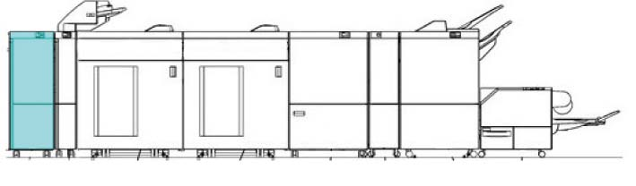
(图 1) ffw910008
产品代码
[FB]
设置 代码: LD200230 (FB 仅)
零件/部分 名称
产品代码
数量
V 代码 (FB 仅)
接口消卷器 D1
QD200137
1
804V
电源 电缆 用于 装订器
EM100188
1
-
[FBAP/WW]
接口消卷器 D1: QD200137
请参阅 6.2.1.1 用于 FBAP/WW 电源线
随附物品
接口消卷器 D1
编号
名称
数量
1
板 Shield 组件 (PL 43.2)
2
2
电源线 Protector 支架
1
3
对接 板
1
4
螺钉 M3x7
4
5
螺钉 M4x16 (用于 ...的安装 对接 板)
2
6
电源线 (选件)
1
7
I/F 电缆 (短路: 640 mm) (选件)
1
8
卡纸 措施 Label
1
9
Label 编号3
1
那里 是 编号 illustrations 用于 编号 8 和 9.
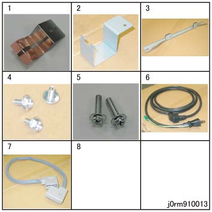
(图 2) rm910013
安装步骤
打开 the package 该 comes 使用 CDM 和 检查 bundled/separate order items.
关闭IOT主机和打印服务器, 拔掉电源.

用于 如何 to 关闭电源, 请参阅 the 维修 手册 用于 IOT 和 打印服务器.
拆卸 packing tape 从 外部 机器的.
打开 the 前面 门 和 拆卸 securing ribbon (前面/后面) 和 tape of 滑槽.
拆卸后下盖板. (PL 43.1a)
拆卸螺钉（x4）.
拆卸后下盖板.
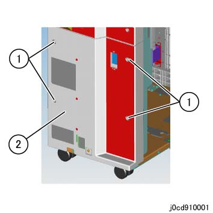
(图 3) cd910001
安装 板 Shield 组件. (PL 43.2)
安装 板 Shield 组件 (x2).
安装 螺钉 M3x7 (x2).
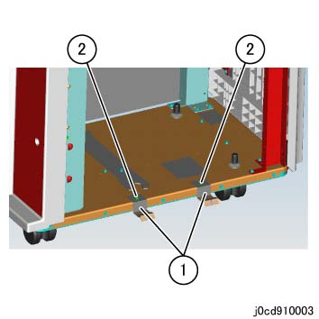
(图 4) cd910003
安装 对接 板 to IOT.
安装 对接 板.
固定 it using 螺钉 M4x16 (x2).
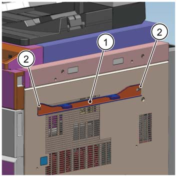
(图 5) cdw910003
Temporarily 拆卸螺钉 该 secures the Latch Stopper.
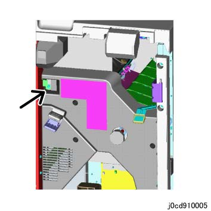
(图 6) cd910005
Paste Label 编号3 向右 盖板 组件 of IOT.
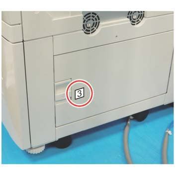
(图 7) ifm910009
对齐 hooks 的 对接 板 到 对接 slots 的 CDM 和 push it in 直到 they 锁定.
如果 hooks 的 对接 板 请勿 match the 高度 的 对接 slots 的 CDM, 执行 步骤 11 to 调整 高度 的 CDM Caster.
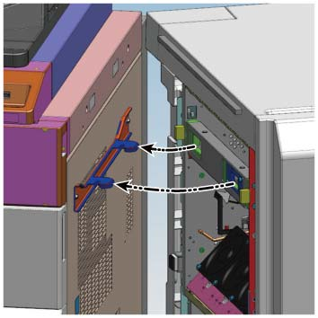
(图 8) cdw910004
Use the provided wrench to 调整 高度 的 CDM Caster as 所需的.
拆卸螺钉 和 拆卸 wrench.
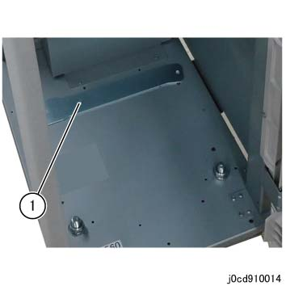
(图 9) cd910014
Caster to be adjusted (前面 侧面).
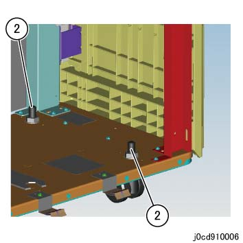
(图 10) cd910006
Caster to be adjusted (后面 侧面).
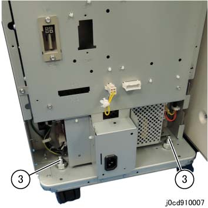
(图 11) cd910007
松开 the securing 螺母 of 每个 caster using the wrench.
[前面 侧面, 上游]
转动 adjusting 螺母 using the wrench 和 调整 高度. (图 12)
[前面 侧面, downstream, 后面 侧面 (x2)]
Use the wrench to 转动 Hexagonal 螺栓 和 调整 高度. (图 13)
拧紧 the securing 螺母 of 每个 caster using the wrench.
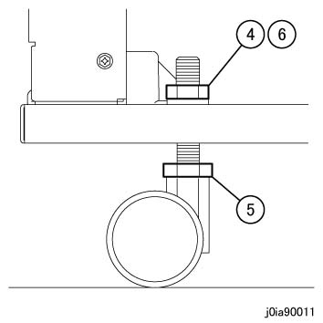
(图 12) ia90011
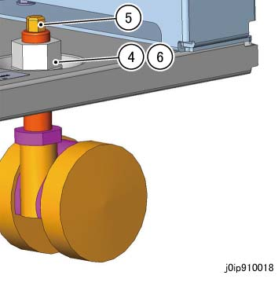
(图 13) ip910018
转动 hexagonal 螺栓 using the provided wrench.
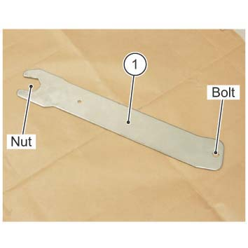
(图 14) ifm910011
如果 is difficult to work 使用 provided wrench, use the ratchet wrench.
固定 the Latch Stopper by using 螺钉.
(图 15) cd910005
连接 CDM 到 subsequent 设备 using the I/F 电缆.
[示例： 用于 HCS 连接]
连接 lattice 连接器 to 连接器 1 (P306).
连接 lattice 连接器 到 HCS.
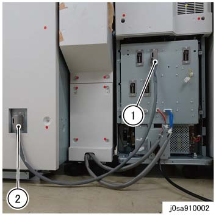
(图 16) sa910002
Reinstall the 后面 下方 盖板 该 已 removed in 步骤 5 in the reverse order.
连接电源线.
插头 电源线 进入 the 入口.
安装 电源线 Protector 支架 using 螺钉 M3x7.
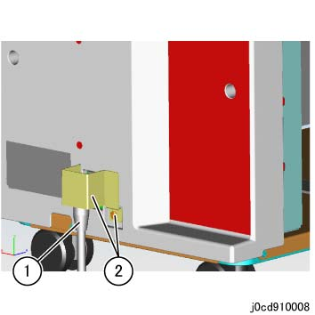
(图 17) cd910008
连接 CDM to IOT by using the I/F 电缆 (短路).
连接 lattice 连接器 to IOT.
连接 lattice 连接器 to 连接器 (P305).
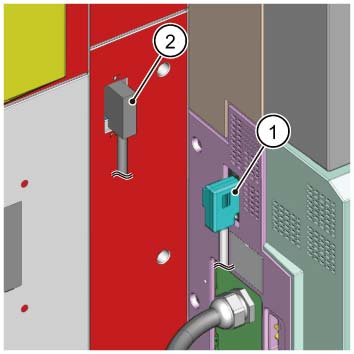
(图 18) cdw910005
[用于 新 installations]
打开电源 of IOT 和 go to 步骤 19.
[如果发生 machine 更换 of CDM in Interposer 安装 配置]
打开电源 of IOT 和 执行 以下.
当...时 changing the CDM 设备 用于 Interposer-installed configurations, the Interposer 纸盘 尺寸 传感器 analog 调整 值 应 loaded 到 CDM/装订器 D6 和/与 以下步骤.
输入 the CE 模式, change the 值 of NVM 769-546 从 0 to 1.
出纸 CE 模式 和 转动 关机 然后 ON.
检查 操作 的 CDM.
检查 状态 of 纸张 传输, 用于 异常 噪音, 和 等.
确认 纸张 不 get 卡住的, torn, contaminated, folded, or creased.
[当...时 长 纸张 is supported]
If an 错误 occurs, 执行 Steps 20 to 23.
[当...时 长 纸张 is supported]
关闭 IOT.
[当...时 长 纸张 is supported]
释放 对接.
[当...时 长 纸张 is supported]
调整 对接 调整 板.
松开螺钉 在后面.
拆卸螺钉 在前面, 和 reposition it 到 长 hole.
调整 对接 调整 板 按照 the 表 以下.
纸张 不对齐 方向
移动 方向 of 调整 板
前面 方向
前面 方向 (a)
后面 方向
后面 方向 (b)
固定 the 螺钉（x2）.
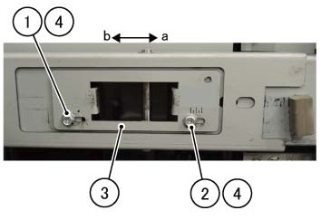
(图 19) ff910046
[当...时 长 纸张 is supported]
执行 对接 再次 和 启动 超过 从 步骤 17.
Create a report 和/与 以下 Mod 编号
接口消卷器 D1: 804V